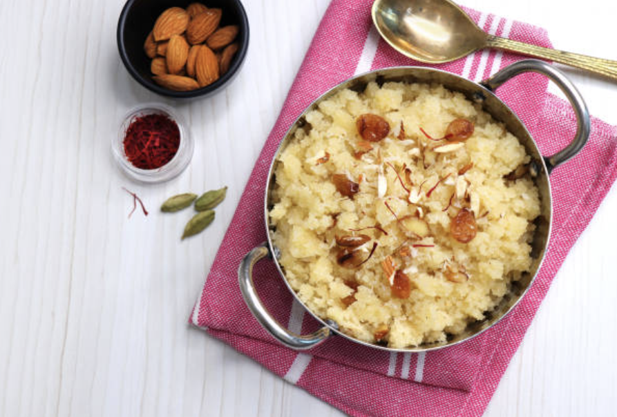

Suji Halwa

Ingredients
- 1 cup semolina (suji)
- 1/2 cup ghee
- 3/4 cup sugar
- 2.5 cups water
- 1/4 cup mixed nuts (chopped)
- 1/4 tsp cardamom powder
- Few strands of saffron (optional)
- Raisins for garnish
Instructions
- Heat ghee in a pan over medium heat.
- Add semolina and roast until light golden and fragrant (about 8-10 minutes).
- Meanwhile, in another pan, heat water and add sugar. Stir until dissolved.
- Add cardamom powder and saffron to the sugar syrup.
- Carefully add the hot sugar syrup to the roasted semolina.
- Stir continuously to avoid lumps. Cook until the mixture thickens.
- Add chopped nuts and mix well.
- Garnish with raisins and serve hot.
Chef's Tips
- Roast the semolina on medium-low heat for best results
- The sugar syrup should be hot when added to avoid lumps
- Add a pinch of saffron for a beautiful aroma and color
- Can be stored in an airtight container for 2-3 days